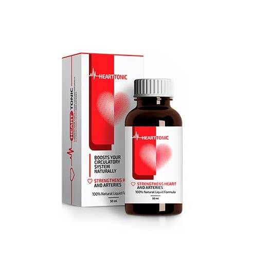

Makaleler • Altın Vakfı • Söyleşiler
Ödem, kas ağrısı ve kramp: Tıkalı damarların 3 sadık göstergesi. Evinizde kendiniz nasıl tedavi edebilirsiniz?
Kolesterolün ve pıhtıların en büyük düşmanı ile damarların en iyi arkadışı kimdir?
Akşamları bacaklarınız şişiyor mu? Ayak tabanlarınız ve ayaklarınız şiş mi, ayak bileklerinizde lekeler var mı? Bunlar, damarlarda ödemin, yani tıkalı damarların duvar çeperlerinde oluşan sıvının işareti olabilir. Ödem, kan dolaşımını olumsuz etkilediğinden adale ağrısı ve kas kramplarına neden olur.
Herkes, felcin ve kalp krizinin kolesterolün tıkadığı damarların bir sonucu olduğunu bilir. Kardiyovasküler hastalıklar. Ne var ki çok az kişi bunun buz dağının sadece görünen kısmı olduğunun farkındadır. “Tıkalı damarlar” tedavi edilemez olduğu varsayılan her 10 kronik hastalıktan dokuzunun sebebidir.
Baş ağrısı, tansiyon oynamaları. Eklemleriniz ağrır, yükünüzü taşıyamaz, boynunuzu neredeyse döndüremez veya eğemezsiniz. Akşamları bacaklarınız, sabahları ise yüzünüz şişer. Kulaklarınız çınlar. Elleriniz ve parmaklarınız hissizleşir. Ayaklarınız hep soğuktur. Görme bozukluğu başlar. Hafızanız kötüleşir. Hiçbir şeyi yapmak için enerji bulamazsınız. Çoğu kişi bunu yaşlanmak olarak tarif eder ama bu doğru değildir.
- Damarlar neden %90 oranında sağlığınızdan sorumludur?
- Kolesterole ek olarak damar çeperlerine başka ne depolanır?
- Sağlıksız damarların 4 bariz ve 7 gizli belirtisi
- Damarlarınızı evde kendiniz güvenli bir şekilde nasıl temizleyebilirsiniz?
Bu soruların cevaplarını, İstanbul’daki Tıp ve Eczacılık Üniversitesi, Damar Cerrahisi Bölüm Başkanı, Beyin Cerrahı Profesör Doktor Hasan Çakır’dan aldık.

Doktor Çakır, bugüne kadar 100 binin üzerinde açık beyan cerrahisi gerçekleştirdi. En genç hastası 2 günlük bir bebekti.
Dr. Çakır’ın en karmaşık işlemleri herkesin anlayabileceği şekilde basit kelimelerle açıklamak gibi bir yeteneği de var. Bugüne kadar yazdığı, tıp eğitimi almamış kişilere yönelik 47 kitabı ve sağlık rehberi mevcut. Damarların sağlığımızın %90’ınından sorumlu olduğuna ve genel sıhhatimizin damarlarımızın ne kadar temiz durumda bulunduğuna bağlı olduğuna inanıyor.
Damarlar neden sağlığımızın %90’ını temsil eder?
Sayın Doktor Çakır, birçok kez bedenimizdeki damarların sağlığımızın %90’ınından sorumlu olduğunu belirttiniz. Bunun sebebini açıklar mısınız?
İnsan bedenindeki en büyük organ hangisidir? Bu sorunun cevabını çok az kişi bilir. Tıp eğitimi almış kişiler bile bazen, beyin veya karaciğer diyerek yanlış cevap verebilir. Kurnazlar insanın cildi diyebilirler. Aslına bakacak olursanız, insan bedenindeki en büyük parça damar sistemidir.
Dünyanın çevresini 2,5 kez dolanabiliriz.
Bunun için tek kişinin damar sistemi yeterlidir.

Hayal etmeye çalışın. İnsan bedenindeki tüm damarları çıkarıp uç uca eklesek, uzunluğu 100 bin kilometre olur.
Daha basit şekilde söyleyecek olursak, ekvatorun uzunluğu 40 bin kilometredir. Dolayısıyla tek bir kişinin damarlarından oluşturulacak yekpare ip, dünyanın çevresine 2,5 kez dolanabilir.
Bu rakam hakkında ne düşünüyorsunuz?
Damarlar, sadece içinden kanın aktığı kanallar değildir. Benzersiz ve karmaşık bir organdır. Herhangi bir bozukluk, bedende hastalık oluşmasına neden olur.
Ayaktaki tıkalı damarlar: Varis, ayak şişmesi, ağırlık hissi, bacaklarda donma hissi veya tam aksi olarak ayak tabanlarında yanma hissi. Topuklarda oluşan çatlaklar. Kan dolaşımı bozuklukları: Bakterilere karşı koruma kalmaz, mantar hastalığı oluşur. Tırnaklar kalınlaşır, şekilleri bozulur.
Karaciğer besleyen damarların tıkanması: hepatik steatoz. Yağlı yiyecekler yendiğinde ağızda acı bir tat bırakır.
Eklemlerdeki damarların güçsüzleşmesi ve tıkanması: Kıkırdak dokusu kurur. Eklemler ağrımaya başlar, osteokondroz ve fıtık olur.
Bağırsakların damarları esnekliğini yitir: Hemoroid boğumları oluşur.
Gözlerdeki damarlar: Görme yetisi azalır. Katarakt oluşur. Herkesin yorgunluktan olduğunu sandığı göz kızarıklığı aslında gözlerdeki kılcal damarlardaki mini kanamalardır.
Beyinde kan dolaşımı bozukluğu: Baş dönmesi, kulak çınlaması ve hafızada gerileme. Hiç mutfağa gidip neden gittiğinizi unuttuğunuz oldu mu? Veya bir kelimeyi bir türlü hatırlayamadığınız. Tüm bunlar beyin damarlarının kötüye gittiğinin işaretidir.
Ve yüksek tansiyonu da bu listeye eklemek lazım. Yüksek tansiyon, felcin anası ve kalp krizinin kardeşidir.
Damarlar bizim enerji kaynağımızdır, yaşam gücü onların içinden geçer. Önemli bir kavşak tıkanırsa, yaşam durur.
Tıkalı damarlar: Tüm organlar aç kalır
Kilo fazlası doğrudan damarları etkiler. Kolesterol nedeniyle tıkanan damarlar yüzünde organlarımız aç kalır çünkü gerekli besin yerine ulaşamaz. Beyin, “Yemek yemen lazım” mesajını gönderir. Kişi yemeğini yer. Ne var ki organlar yeterli miktarda besin alamazlar çünkü damarlar tıkanmıştır. Beyin yemeniz için tekrar mesaj gönderir ve bu kısır döngü bu şekilde sürer gider.
Bir şeyler yeme isteği, tatlı ve hamur işi iştahı işte buradan gelir. Bedeninizin kaloriye ihtiyacı vardır.
Meslektaşlarım hastalarına, “Fala kilolarınız nedeniyle yüksek tansiyon hastasısınız” dediklerinde, hastalar sebep ve sonuç ilişkisini karıştırırlar. Yüksek tansiyon aşırı kilo yüzünden olmaz, tam tersidir.
“Her şeyin başı sağlık” diye boşuna söylenmemiştir am aşunu da eklemek gerekir: “Damarlarımızı temiz tutmadan sağlıklı olamayız.”
Bu yüzden sürekli aynı şeyi söylüyorum: Normal bir yaşam sürmek istiyorsanız damarlarınızın sağlığını korumanız gerekir. Temiz damar yapısı, bazıları “tedavi edilemez” kronik hastalıkların %90’ına karşı sizi korur .
Kolesterol dışında neler damarları tıkar?
Hepimiz kolesterolün ne kadar tehlikeli olduğunu biliyoruz. Damarları tıkar, geçiş yollarını daraltır ve dolayısıyla kan dolaşımını engeller. Ancak bu sonuca sebep olan tek şey kolesterol değildir.
6,1 kg
bir kişi 50 yaşına geldiğinde damarlarında biriken kalıntıların toplam ağırlığıdır.
Doğrudur. Kolesterol plakları veya tıbbi adıyla “aterosklerotik plaklar” yaklaşık %65-70 oranında damar bozukluklarının nededir.
Her insan 50 yaşına vardığında vücudunda 5 kiloya kadar kolesterol tabakası birikir. Kolesterolün birikmesi damarlar lümenlerini (yani içlerinde kanın aktığı boşluk) 4-5 kat daraltır.
Hayal etmeye çalışın. İnsanın damar kalınlığını parmak kadar kabul edersek, 5 kilo kolesterolün tıkadığı damarın içinde kanın geçebileceği boşluk 4 kibrit çöpü kalınlığında olur.
Bu plakalar hayati tehlike doğurmayabilir ama yaşam kalitesi düşer, tansiyon yükselir, baş ağrısı, sırt ağrısı, hissizlik başlar. Damarların içinde biriken pıhtı çok daha tehlikelidir.
Damarlarda biriken pıhtı miktarının ağırlığı çok daha azdır, “”yalnızca” 800 gram – 1 kg arasındadır. Fakat dengesiz yapıları nedeniyle çok tehlikelidirler. Bir trombus (damarı tıkayan pıhtı) her an yapışık olduğu damar içi duvarından kopup kurban aramaya başlayabilir.
Büyük trombus parçaları kurbanının damarını tamamen tıkayabilir. Böyle bir durumda iskemi, yani dokunun yeterince kan alamaması ortaya çıkar.
İskemi felci, beyin damarının tıkanmasıdır. Kalp krizi, kalp damarının tıkanmasıdır. Karaciğerde iskemi, akciğer yetmezliği, böbrek yetmezliği bu yüzden oluşur. Basur, kalın bağırsak ucunda yaşanan iskemi durumudur. Ayaktaki kılcal damarların tıkanması, nekroz (kangren) ile sonuçlanabilir.
Gıda takviyeleri ve ilaçların kimyasal kalıntıları damarlarda kalsiyum tuzu birikmesine neden olur. Bir insanın yaşamı boyunca, 50 yıl içinde 300-400 gram birikir. Kalsiyum tuzları en fazla beyin damarlarında birikir.
Bunlar kristal yapıları nedeniyle tehlike arz ederler. Damarları daraltırlar ve stres, fiziksel hareket veya hava durumundaki değişiklik nedeniyle damarın spazm yapması halinde keskin kristal kenarları damarı delebilir. Beyin damarının delinmesi hemorajik inme olarak bilinir.
Sağlıksız damar yapısının 4 bariz ve 7 gizli belirtisi
Damarlarımızın tıkalı olduğunu işaret eden belirtiler nelerdir? Vücudumuzun verdiği, “Hemen damarlarını temizle” mesajını nasıl anlayabiliriz?
Yaşınız 45 üzeri ise ve damarlarınızı temizlemek için hiç nutrasotik kullanmadıysanız, sorununuz olduğunu söyleyebilirim.
45
yaş, damarlarınızı temizlemek için dönüm noktasıdır
Damarların kolesterol ve pıhtı ile tıkanması yaşlanma sürecinin doğal bir sonucudur. Günümüzün gıdaları, ilaçlar, sigara içmek, alkol kullanmak bu süreci ve tıkanıklık miktarını 5-8 kat artırmaktadır. Bugün içinde yaşadığımız dünyanın gerçeği budur ve inkar edilemez.
Damarların kirlendiğinin ana belirtisi
Size yüksek tansiyon teşhisi konulduysa bu yazıyı okumayı bırakabilirsiniz çünkü damar hastalıklarının kralı sizde mevcut demektir.
Tansiyon oynamalarından şikayetçi misiniz? Tansiyonunuz sürekli yüksek ve düzenli olarak tansiyon ilacı almanız gerekiyor mu? Bu sorulara yanıtınız evet ise, damarlarınızda kan dolaşımının gerçekleşebileceği %30 oranında boş yer kalmış demektir. Damarlarınızın geri kalanı kolesterol plakları, kan pıhtısı ve kalsiyum tuzları ile dolmuştur.
Dolayısıyla en küçük bir stres, hava koşullarında bir değişiklik ya da manyetik fırtına sağlığınızı anında etkiler. Bu durumda tansiyonunuz yükselir, şakaklarınız zonklamaya başlar ve eklemlerinizde ağrı oluşur.
Tıkalı damarların sebep olduğu 4 hastalık
- 1. Hipertansiyon (Yüksek tansiyon) İstikrarsız veya yüksek tansiyonu ilaç içerek dengelemek ya da düşürmek zorundasınızdır. Ana belirtilere dikkat etmelisiniz. Hipertansiyon teşhisi konuldu mu? O zaman damarlarınızı temizleme zamanı geldi demektir.
- 2. Variköz venler (varisli damarlar) Bacaklarda çirkin ve şiş damarlar olarak görünür. Ağırlık, ağrı ve ödem hissi verir. Kolesterol ve pıhtı kalıntıları damar kapakçıklarını tıkar. Zaman içerisinde variz “yıldızları” oluşur ve bunlarda “örümcek ağı” gibi bir yapı alır. İşte varili damarlar bu şekilde oluşur.
- 3. Hemoroit (basur) Rektumdaki damarların tıkanması basur düğümlerinin şişmesine neden olur. Kan taşıyıcı damarlardan gelen tortu, anüsteki çatlakları artırır.
- 4. Osteokondroz (Kireçlenme) Kıkırdaklarda yetersiz kan dolaşımı yüzünden oluşur. Kıkırdak sertleşir ve işlevini göremez hale gelir. İyileşecek zaman bulamazlar. Yenilenmedikleri için kururlar. Nemlenme işlevlerini kaybederler. Tuzlar temizlenmez ve kontrol edilemez şekilde birikmeye başlar.
7 gizli belirti
- 1. Ödem Tıkanan damarlar vücuttaki suyu pompalayamaz. Vücudun tuz-su dengesi bozulur. Akşamlar ayaklar şişer, çoraplar bileklerde kalın ve derin iz bırakır. Yüzde şişlik, gözaltında torbalar oluşur. Parmağınızdaki yüzüğü artık çıkaramaz hale gelirsiniz. Göbekte şişlik, iç organlarda şişmenin işaretidir.
- 2. Kulak çınlaması Önceleri hafif başlayan zamanla artan sesler konsantre olmanızı engeller. Bu seslerin sebebi, kulak zarına baskı yapan beyin damarlarında tansiyonun yükselmesidir.
- 3. Baş dönmesi Kişi sarhoşmuş gibi hisseder. Ani oluşan baş dönmesi, vestibüler sisteminin iyi çalışmadığının işaretidir.
- 4. Uykusuzluk Kendinizi uykusuz ve enerjisi bitik hissetmenize rağmen gece yarısından önce uyku tutmuyor mu? Bunun nedeni hipofiz bezlerine yeterince kan gitmemesidir. Bu da, uyku hormonu olan melatonin üretimini aksatır.
- 5. Takat eksikliği Gücünüz kalmamış gibi hissedersiniz. Canınız hiçbir şey yapmak istemez. Tek istediğiniz yataktan çıkmamak ve yemek yemektir. Bu durum vücut enerji tasarruf etmeye başladığında yaşanır. Damarlar organlar için gerekli olan besini taşıyamamaktadır, o yüzden de vücut hayatta kalmak için faaliyetlerini minimum düzeye indirmektedir.
- 6. Görme bozuklukları Gözünüzün önünde minik “sinekler” uçuşur. Göz merceği damarlarına ait belirtilerdir.
- 7. Eklem ağrısı Hava durumu değiştiğinde eklemlerde ağrı yaşanır. Sabahları dinlenmiş ve güçlenmiş kalkmak yerine kişi neredeyse felç olmuş gibi hisseder. Kemiklerinin acıdığından bahseder. Bunun nedeni eklem sıvısının özelliğini yitirmesidir.
Bu belirtilerden herhangi birine sahip misiniz? Yanıtınız evet ise, eklemleriniz size damarlarınızı temizleme vaktinin geldiğini söylemektedir.
İnsanlar genellikle bu belirtilerin birkaçına birden aynı anda sahip olabilirler. Hatta bazen hepsi birden tek kişide görülebilir.
Hastalar her hastalığı ayrı ayrı tedavi etmeye çalışır. Tansiyon ilaçları, bacaklardaki varisler için merhem, kireçlenme için jel kullanırlar. Ve elbette bol miktarda aldıkları ağrı kesici, ağrı kesici, ağrı kesici...
Yani ilaçlar için çuvalla para akıtırlar. Fakat damar hastalıklarının tek bir sebebi vardır: tıkanıklık. İşte burada damar sisteminin genel anlamda temizliğine başlamak gerekir.
Peki, damarlardaki kolesterolü, pıhtı ve tuz birikintilerini temizlemek için ne kullanmalısınız?
Lütfen profesyonel önerinizi belirtin. Örneğin, Antalya’da yaşayan 57 yaşındaki Hülya Koç’un fazla kilo, hipertansiyon ve varis şikayetleri var. Hülya Hanım, havadaki en küçük bir değişikliği adeta barometre gibi hissedebiliyor çünkü eklemleri ağrımaya başlıyor. Baş ağrısı, baş dönmesi ve yorunluk hissediyor.
Hülya Hanım’a nasıl yardımcı olabiliriz? Damarlarını nasıl temizleyebilir? Doktora gitmek ve “Kilo vermeniz lazım”, “Spor yapmanız lazım”, “Sağlıklı beslenmeniz lazım”, “Bu yaşta daha dikkatli yaşamanız lazım” gibi cümleler duymak istemiyor.
Tıbbi ve farmasötik ürünlerin büyük kısmının, banka hesabında para kalmamasını ve ilaçlara bağımlı hale gelmesini sağlamanın dışında bir faydası olmuyor.
Maalesef Türkiye’de sağlık sistemi böyle çalışıyor. Hastaların doktora gitmemek için gösterdikleri inadı anlayabiliyorum. Peki, Hülya Hanım doktorsuz yapabilir mi?
Benim, damarların güvenli bir şekilde temizlenmesi için söyleyebileceğim tek bir ürün var: HeartTonic. HeartTonic isan yaşamını 11-17 yıl uzatır. Enerji ve rahatlama hissi verir, eziyetten kurtarır ve gücünüzden en küçük bir parça bile harcamaz.
Zararsızdır çünkü şifalı otlardan oluşmuş çaydır. En çok kullanılan 2. sıradaki damar temizleme ürünüdür. Birinci sırada cerrahi müdahale yer alır. Neşterin kullanıldığı yöntemlerin aksine herhangi bir komplikasyona neden olmaz veya yan etkiye sahip değildir. En kalın atar damarlardan en ince ve narin kılcal damarlara kadar
HeartTonic bitki özleri karışımından oluşur ve su ile temas ettiğinde canlı molekülleri etkinleştirir. Bu dikkatli temizlikçiler damarlardan cidarlarına yapışmış kolesterolü, pıhtıları, kalsiyum plaklarını ve ilaç kalıntılarını yok eder. Yani kan dolaşımını engelleyen her şeyi temizler.
Yıllar içinde biriken ve hayatınızı zehir eden tüm pislik HeartTonic tarafından sadece 1,5-2 aylık tedavi ile temizlenir.
HeartTonic, sadece 6 hafta içinde 4 kilo kolesterol plağını eritip kaldırır. 900 gram ila 1 kilo arasındaki pıhtı kütlesinin yumuşatır, 350-400 gram arasındaki kalsiyum kloridi yıkar.
Bu sayede baş ağrılarınız ve kulak çınlamaları kalmaz. Beyne yeterli besin gitmeye başlar ve süper bilgisayar hızında çalışır. düşünceler berraklaşır.
Duygular yoğunlaşır, daha önce duymadığınız huzur verici sesleri duymaya başlarsınız. Duyma duyusu iyileşir, daha önce duyamadığınız yan odadaki sohbeti bile takip edebilir hale gelirsiniz.
Koku alma duyusu yeni renkler edinir. Burun tıkanıklığı biter. Kronik iç burun iltihabı ve alerji şikayetiniz kalmaz. Bronşlar düzelir. Nefes alıp vermek kolaylaşır. Ciğerlere dolan temiz hava tüm bedene yayılarak mutluk hissi yaratır.
Tat alma duyusu güçlenir ve derinleşir. Sıradan yiyeceklerden daha fazla keyif almaya başlarsınız. Daha az yiyip daha tok hissedersiniz. Tatlı ve yağlı yiyeceklere olan düşkünlüğünüz biter.
Eklemleriniz size teşekkür eder. Sürekli çekilen ağrılar kesilir. Çatırdamazlar ve eklem sıvısının geri gelmesi sayesinde hareket etmek kolaylaşır. Bir arabanın yağını değiştirmek gibidir. Yanmış ve eskimiş zift gibi yağın yerine, temiz ve taze yağ koyarak her aksamın rahatça çalışmasını sağlamış olursunuz.
Çok etkileyici. Daha önce HeartTonic hakkında bir şey duymamıştım. Nutrasötikler hakkında genel bir bilgiye sahiptim. Japonya ve İsrail’de nutrasötikler ana tedavi yöntemi olarak kabul edilir. Fakat Türkiye’de bu ürünlere hala şüpheyle yaklaşılıyor.
Eminim, Hülya Hanım bugüne kadar kuşkulu şöhrete sahip mucizevi ürünlere para harcamamak için yüzlerce gıda takviyesi ve ilaç kullanmıştır.
Şüphelerimiz bize ihanet eder. Korkutarak başarabileceklerimizi kaybetmemize neden olur.
Size özgüven eksikliği ile ilgili bir hikâye anlatayım.
1928 yılında ilk antibiyotik icat edildi: Penisilin. Bu ilaç yıllarca pek çok insanın ölümüne neden olan dizanteri ve tifo hastalıklarını tedavi etti.
Ne var ki insanların çoğu, penisilinin kendilerine faydası dokunacağına inanmıyordu çünkü daha önce binlerce hiçbir şeye yaramaz tedavi yöntemini kullanmışlardı. Fakat binlerce başarısızlık yaşamış ama denemekten korkmayanlar iyileştiler. İlk grup hastalar, “Bir işe yaramaz ilaç daha” düşüncesindeydiler ve hayatlarıyla ödediler. Hâlbuki iyileşmelerini sağlayacak çözüm burunlarının dibindeydi.
Penisilinin dizanteri, tifo ve vebayı ortadan kaldırması gibi HeartTonic de damar hastalıklarını yok edecek. Kore, Japonya, Kanada, İsviçre ve İsrail’de bu yönde ilk adımlar atıldı. bu ilkelerde yasal bir çerçeve oluşturuldu. Damarların temizlenmesinde tıbbi tedaviden önce nutrasötiklerin kullanılması kararı alındı.
Ben de katılıyorum, şüphe en büyük düşmandır. Kişisel olarak ben yeni şeyleri denemekten çekinmem.
Şimdi hayal edelim ki ben, HeartTonic satın alıyorum, kutusunu açıyorum, şişeyi çıkarıyorum ve ½ çay kaşığı kadar bir miktarı bir bardak suda eritiyorum... Sonra ne oluyor? HeartTonic nasıl işe yarıyor?
Suya katıldığında gerçek bir doğal laboratuvarı etkinleştiriyor. Kostik soda: Madenlerden elde edilen bu doğal soda, su ile reaksiyona girerek HeartTonic içinde bulunan doğal bitki özlerinin oksijenlenme sürecini başlatır.
Peroksitin (oksijenlenme ) etkisi: Oksijenle zenginleşme sayesinde moleküllerin emilimi hızlanır.
Su ve oksijenle zenginleşen şifalı özler peroksidin özelliklerini edinir: Oksijenlenme.
Aslında HeartTonic içeriğindeki moleküller oksijen bombası gibidir. Damarlardaki kolesterol plaklarını patlatıp kan dolaşımı için yol açarlar.
Bu HeartTonic isimli koyu sıvı sarıya çalan bir rengi var. Hafif ekşi tadından çok hafif yıldız anason ve dereotu hissediliyor
5 dakika içinde bu çözeltinin içilmesi gerekiyor çünkü oksijenlenme reaksiyonu ile etkinleşen bitki özleri moleküleri bu kadar süre çalışıyor. HeartTonic ürününün bu kadar etkili olmasının bir diğer nedeni de etkin haldeki canlı bitki özleri tüketmeniz. Öte yandan ilaçların çoğu ölü ve etkin olmayan moleküller içerir.
Peroksidin etkisi canlı moleküllerin anında asimile edilmelerini sağlar. Oksijenle zenginleşen bitki özleri, yemek borusu tarafından kolaylıkla emilir. Bu sayede HeartTonic midede yanma, acı tat, gaz oluşmasına neden olmaz ve bağırsakları zorlamaz, mideyi korur. Mide ülseri olan hastalar için bile uygundur. HeartTonic hiçbir yan etkiye sahip değildir.
Damarların saflığını ve direncini sağlamak için uyum içinde çalışan şifalı özler içeren bir hazinedir.
Tibet lofantı kolesterolün sebep olduğu tıkanıkları açar. Lofant molekülleri damarların iç duvarına yapışık kolesterol parçacıklarını kaldırmak için çekiç gibi çalışır. Bu sayede kan dolaşımının yolu açılır. Organlar besinlerini “içmeye” başlarlar. Oksijen ve suya kavuşan kıkırdaklar “hayat bulur” ve otomatik iyileşme mekanizması devreye girer. Esneklik geri gelir. Boyun oynatılırken çıkan ses kaybolur. Hava değiştiğinde dizlerde ve parmaklarda çıkan ağrı kesilir.
Ödem yok olur. Kişi bütün gün ayakta durmuş olsa bile artık bacaklarda şişme görülmez.
Ciltteki kan dolaşımı düzelir. Örümcek ağına benzeyen ve dışarından görülebilen damarlar yok olur. Varis zaman içerisinde gide ve hemoroit boğumları kurur.
Andız otu özünün molekülleri. Kolesterol parçacıklarını yakalayıp içine karışarak yağ parçalayan yüksek yoğunluklu lipoproteine çevirir.
HeartTonic 2 problemi çözer: Kolesterol kalıntısını temizler ve yağın doğru şekilde yakılmasını sağlar. Ürünün kullandıktan sonra güçlenmiş hissetmeye başlarsınız ve hareket etme ihtiyacı duyarsınız. Dağları yerinden oynatabileceğinizi düşünürsünüz.
Çörek otu özü damar spazmlarını önler. damarların pürüzleşmesine yol açar. Aynı şekilde damar kramplarını engeller. Kan dolaşımı bozukluğu çeken damarların gevşemesine ve düzelmesine neden olur. Baş ağrıları kesilir, kulak çınlaması azalır, akciğerler ve bronşlar daha iyi çalışmaya başlar. Nefessiz kalmış hissetmezsiniz.
Aslan kulağı özü damarların içinde dolaşarak kan pıhtısı arar. Kanı sulandırarak dolaşımını iyileştirir. Pıhtıları ve hatta küçük anevrizmaları parçalar. Damarlarda birikmiş kalsiyum tuzu birikintilerini ve ilaç kalıntılarını yıkar.
Göğsünüzde hissettiğiniz baskı kalkar, daha rahat nefes alırsınız. Kalp atışı normal seviyesine döner. Aritmi ve taşikardi şikâyetiniz kalmaz. Kalbinize aniden giren sancılar yok olur.
Kalp krizi geçirme riski sıfıra iner.
Amarant tohumu damarların duvarlarını tamir eder. Amarant tohumu molekülleri küçük çatlakları yama yapar gibi kapatır. Beyin felce karşı düzgün şekilde korunur. Hücreler besin ve oksijen almaya başlar. Başınızı daha hafifmiş gibi hissedersiniz.
Kelebek etkisi
HeartTonic kelebeğin kanat çırpması gibidir ve inanması güç bir dizi olayın zincirleme meydana gelmesine yol açar. Çalışmaya, yıllar içinde birikmiş olan tortunun damarlardan temizlenmesi ile başlayan HeartTonic adım adım tüm vücudun iyileşmesine giden yolda zincirleme tepkimeyi başlatır.
HeartTonic ile uygulanacak 1 aylık tedavinin sonunda yeniden doğmuş gibi hissedersiniz.
Sabahları uyanırsınız ve yataktan zorlanmadan kalkarsınız. Bacaklarınızın, sırtınızın ve boynunuzun kendine gelmesini beklemeniz gerekmez.
Beden sabahla birlikte güç ve enerji dolu olur çünkü artık damarlar tertemizdir ve tüm organlar ihtiyaç duydukları besini ve oksijeni gece boyu alabilmiştir. Bedenin her yanı yeni bir gün için gereken gücü sağlayan doğru miktarda kan ile beslenmiştir.
Kahvaltıda ekmeğinizi sucuklu yumurtaya banarak yersiniz. Mideniz rahatlıkla kabul eder. Midenizde artık acı ve geçmeyen bir ağrı yoktur HeartTonic mideyi besleyen damarları temizlemiştir. Taş yutsanız hazmedecek kadar güçlenmiştir.
Evden çıkarken ayaklarınızdan dolayı endişe duymazsınız. Bütün gün yürüseniz bile sorun çıkarmayacak, yorulmayacak ve şişmeyeceklerdir. Ayakkabınız ve çoraplarınız artık ayaklarınızda iz bırakmaz.
Rahatlamış ve sakinleşmiş hissedersiniz. Bilincinizi bulanıklaştıran ve odaklanmanızı engelleyen inatçı ağrı artık yoktur. Ağrınız kalmadığı için alışık olduğunuz sesler, kokular daha yoğun hissedilir.
Yoğun geçen bir mesai gününün sonunda bile evinize zihniniz açık dönersiniz. Beyniniz artık bir saat gibi tıkır tıkır çalışıyordur. Kendinizi yorgun hissetmezsiniz.
Başınızı yastığa koyduğunuz anda uykuya dalmaya başlarsınız. Eskiden olduğu gibi yatağın içinde saatlerce uyku tutmadan bir o yana bir bu yana dönmelerden iz kalmaz. Artık iş çok kolaylaşmıştır. Ne zaman uyuyacağınıza siz karar verirsiniz ve bedeniniz buna uyar.
Piyasa açığı ve indirim programı
- HeartTonic piyasadan yok oldu, hiçbir eczanede bulunmuyor. Neden?
Maalesef söylediğiniz doğru. Bu yılın başından bu yana HeartTonic artık eczanelere verilmiyor.
Sorun ilaç şirketlerinin aç gözlülüğünden kaynaklanıyor. Bu şirketler, HeartTonic üreticisinin satıl her pakette kendilerine 450 TL ödenmesini talep ettiler. Firmalar, ürün eczanelerde piyasaya sürülürken bu tutarın fiyata eklenmesini ( HeartTonic ürününün fiyatı İstanbul’da kimi eczanelerde 1.500 TL seviyesine ulaştı) istediler.
Firmaların temsilcilerine göre bulundukları istek makul gerekçelere dayanıyordu. Bu sayede faaliyetlerine devam edebileceklerdi. HeartTonic hastaların 7 ila 10 yılda bir ihtiyaç duyacakları bir ilaç. Dahası damarlar HeartTonic ile temizlendikten sonra hastalar, daha önce düzenli olarak kullandıkları tıbbi ürünlere ihtiyaç duymuyorlar. Kimse tansiyonunu düşürmek veya eklem ağrılarını geçirmek için ilaç almak zorunda kalmıyor. Astım ve diyabet ilaçlarına olan talep son derece düştü. Doğal olarak bu durum ilaç şirketleri açısından büyük parasal zarar demektir. Bu yüzden HeartTonic satış fiyatı üzerine böylesine aşırı bir kâr marjı koymak istediler.
Sonuç olarak HeartTonic üreticisi, eczaneler ile olan sözleşmeyi iptal ederek tamamen internetten satışa yöneldi. Aslında bu en doğru karardır. Kira ödemek, eczanelerde raf yeri kapmak için mücadele etmek gibi dertleri kalmadı. Yani, HeartTonic eczanelerde satılmaya kıyasla herkesin çok daha kolay erişebileceği bir duruma geldi.
“Temiz Damarlar” İndirim Programı
Enstitümüz, İstanbul’daki Tıp ve Eczacılık Üniversitesi, PTT ve HeartTonic üreticisi ile toplu bir iş birliği yaparak tele-tıp projesi (online tıp) kapsamında bir indirim programı başlattı.
Programa katılan herkes HeartTonic siparişi vererek en fazla 89 TL karşılığında bu ürüne sahip olabilir.
Programa katılmak için ne yapmak gerekiyor?
İndirim programı dahilinde HeartTonic siparişi vermek isteyenlerin aşağıdaki koşulları yerine getirmesi gerekiyor:
Programın HeartTonic koşulları
- Kişi HeartTonic ürünün kişisel amaçlarla satın alıyor olmalı Ürünün siparişini veren ve alıcısı aynı kişi olmalıdır. Bu şekilde, aracı kurumların toptan satın alım yapıp üzerine kâr marjı ekleyerek başkalarına HeartTonic satması engellenmeye çalışılmaktadır.
- Sipariş programın resmi formu kullanılarak verilmelidir Siparişinizde resmi formu kullanmak size üreticinin fiyatı üzerinden satın alım yapmanızı sağlar ve sizi aracılardan korur.
İndirim programı ne kadar sürecek?
Eldeki HeartTonic stokları tükenene kadar program devam edecektir. Elimizde 3-4 hafta yetecek kadar stok olduğunu tahmin ediyoruz. Hiç reklam yapılmamasına rağmen, bu ilacı kullanarak sağlığına kavuşanlar eşe dosta haber veriyorlar. Elimizdeki HeartTonic stokunun bu kadar çabuk bitecek olması bizim için sürpriz oldu. HeartTonic indirim programı
04.09.2020
(dahil) tarihinde bitecektir.
Onun için bir an önce HeartTonic siparişinizi vermenizi öneririm. Programın bu yıl bir daha tekrarlanması planlanmıyor.

Yorumlar
